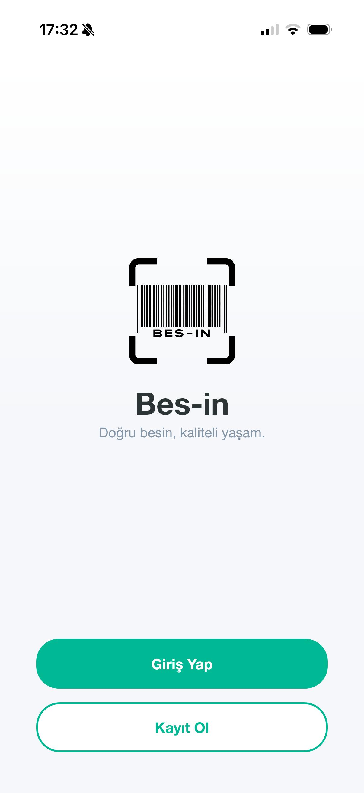
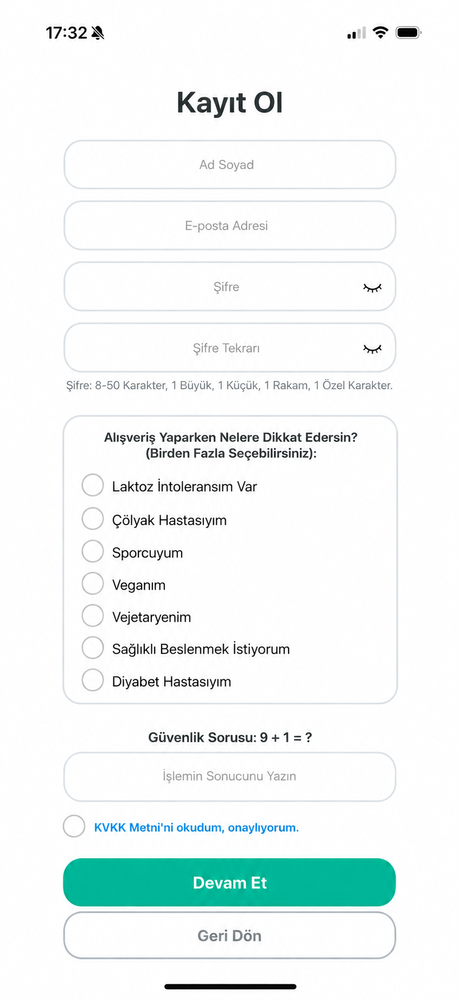
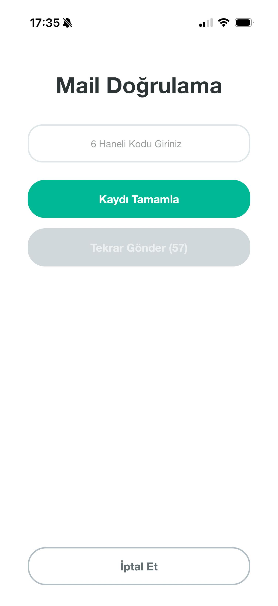
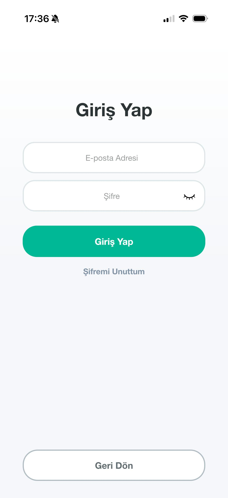
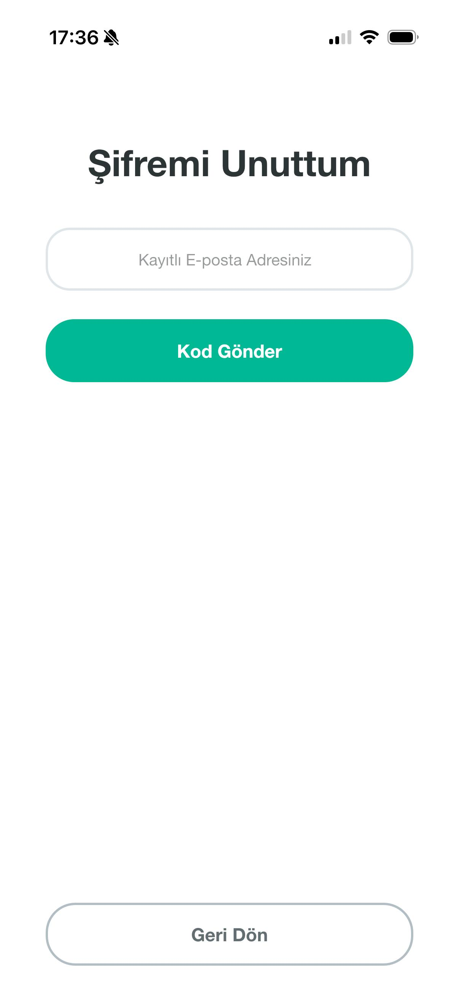
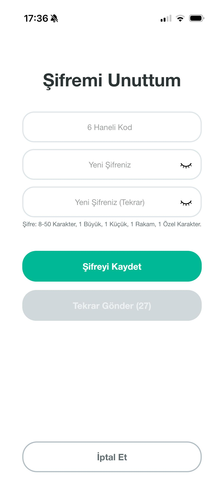
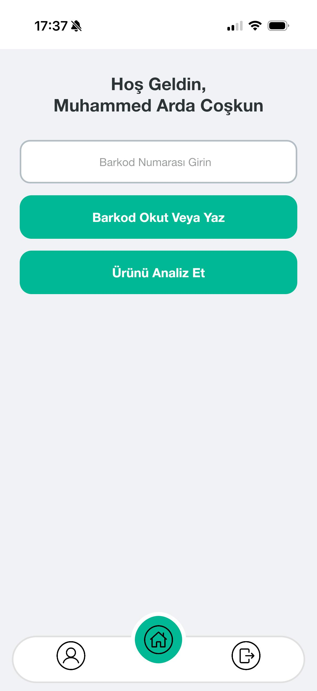
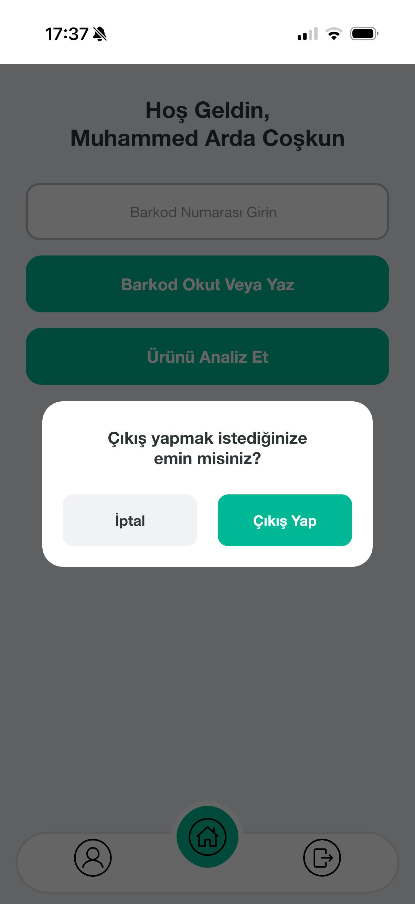
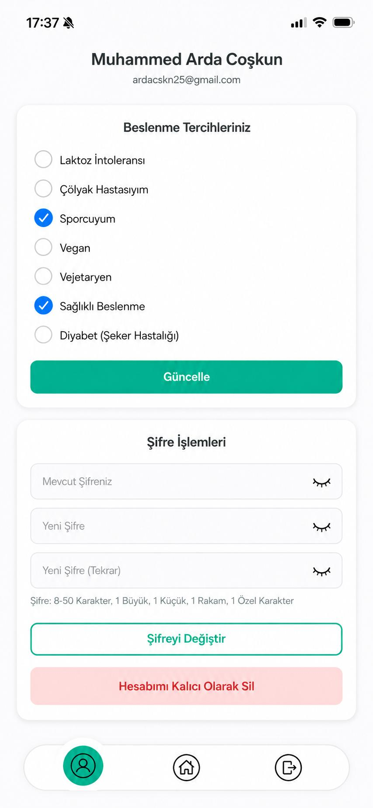

BES-IN
BES-IN, yapay zeka (Google Gemini) destekli akıllı bir gıda analiz uygulamasıdır. Amacı; kullanıcıların barkod veya ürün fotoğrafı aracılığıyla gıdaları saniyeler içinde analiz etmesini sağlamak ve kişisel sağlık profillerine (çölyak, vegan, diyabet vb.) uygun, özelleştirilmiş beslenme tavsiyeleri sunmaktır.

1. Adım: İlk Buluşma (Karşılama Ekranı)
"Doğru Besin, Kaliteli Yaşam"
Uygulamamıza adım attığınız ilk andan itibaren sizi göz yormayan, modern ve sade bir arayüz karşılıyor. Kullanıcılarımız bu ekrandan yola çıkarak yepyeni bir hesap oluşturabilir veya mevcut hesaplarına hızlıca geçiş yapabilirler. Sistem, mobil uyumlu dinamik tasarımıyla en iyi kullanıcı deneyimini (UX) sunmayı hedefler.

2. Adım: Kayıt ve Yapay Zeka Profilinin Oluşturulması
Sizi Tanıyan Bir Asistan:
Kişiselleştirilmiş Kayıt BES-IN'de kayıt olmak sadece bilgilerinizi girmek demek değildir; aynı zamanda dijital sağlık profilinizi oluşturmaktır. Kullanıcılarımız Laktoz İntoleransı, Çölyak, Vegan veya Sporcu gibi diyet tercihlerini bu ekranda belirler. Bu veriler, Google Gemini yapay zekasının ileride size sunacağı sağlık ve beslenme yorumlarının temelini oluşturur.

3. Adım: Güvenli Doğrulama
Supabase Altyapısıyla Verileriniz Güvende
Kayıt adımından sonra, kullanıcı güvenliğini en üst düzeyde tutmak amacıyla 6 haneli e-posta doğrulama sistemi devreye girer. Supabase bulut veritabanı entegrasyonu sayesinde onay kodları saniyeler içinde iletilir ve hesabınız güvenli bir şekilde aktifleştirilir.

4. Adım: Hızlı ve Güvenli Giriş (Login)
Hesabınıza Anında Erişim
Hesabını daha önceden oluşturmuş kullanıcılarımız, karmaşadan uzak ve minimalist giriş ekranımız sayesinde vakit kaybetmeden sisteme erişebilirler. E-posta adresi ve şifre ile yapılan giriş işlemleri, dinamik arayüz ile kusursuz bir şekilde sağlanır.


5. Adım: Şifre Kurtarma Süreci
Güvenlikten Ödün Vermeyen Şifre Sıfırlama
Kullanıcılarımız şifrelerini unuttuklarında, kayıtlı e-posta adreslerine gönderilen özel doğrulama kodu ile hesaplarını kolayca kurtarabilirler.


6. Adım: Ana Sayfa ve Yapay Zeka Destekli Analiz
Analiz Saniyeler İçinde Başlıyor
Sisteme giriş yaptıktan sonra sizi tamamen amaca yönelik, temiz bir ana sayfa karşılar. OpenFoodFacts API ve Google Gemini entegrasyonu sayesinde barkod okutarak saniyeler içinde analiz sağlanır.

7. Adım: Dinamik Profil Yönetimi
Tercihleriniz Zamanla Değişebilir
Profil ekranı, kullanıcıların BES-IN deneyimini kendi yaşam tarzlarına göre sürekli güncel tutabildikleri merkezdir.